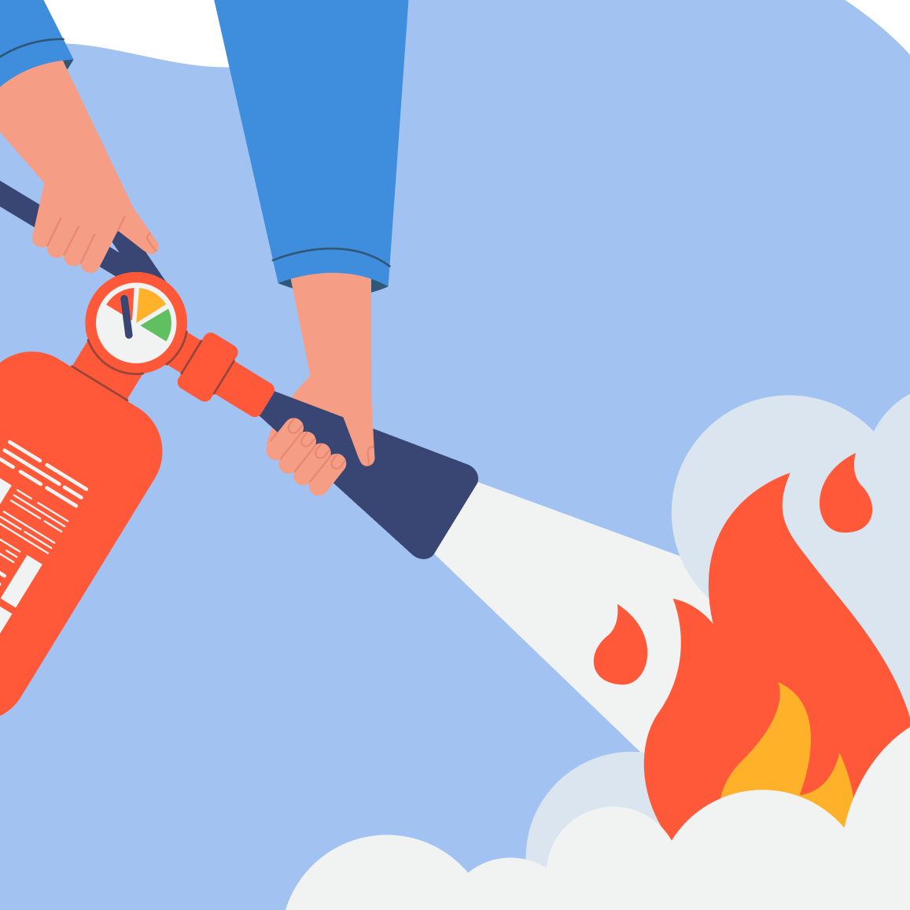

Combate de Incendios

Supervisor y brigadista contra incendios [ Virtual sincrónico 15hs ]
Este curso brinda herramientas claras para prevenir riesgos, detectar señales de alarma y actuar con criterio y organización ante un incendio, en entornos residenciales, comerciales e industriales, ya sea como brigadista, capitán de brigada o jefe de emergencias.

Uso de extintores con certificado para habilitaciones [ Virtual sincrónico 2:30hs ]
Curso básico de extintores destinado a locales comerciales y empresas sin riesgos especiales, de baja ocupación y facil evacuación. Apto para dar cumplimiento ante entidades municipales o empresas aseguradoras.